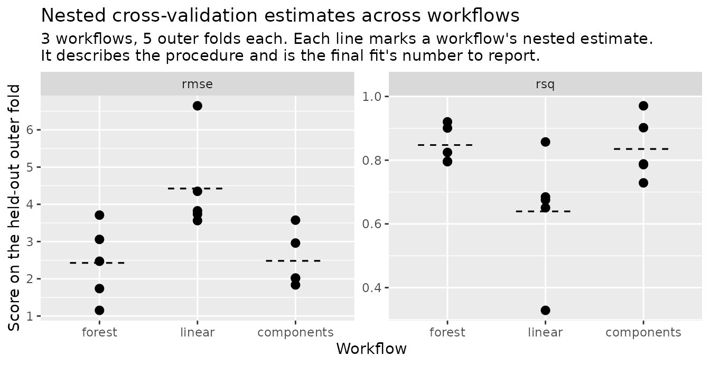

The inner search of a nested run can use a fixed grid, a race, Bayesian optimization or simulated annealing. Each search has a nested function that takes the same design and workflow and returns the same kind of result. A race spends fewer fits when some candidates (settings tried) are clearly worse. The Bayesian and annealing searches propose candidates from ranges rather than a fixed grid.
vignette("nested-cv") uses the grid. This page runs the
other searches on the same example. It then scores two more things on
the same folds: a workflow with nothing to tune, and a set of
workflows.
The setup
We reuse the design, the random forest and the grid from
vignette("nested-cv").
set.seed(1)
folds <- nested_resamples(
mtcars,
outside = vfold_cv(v = 5),
inside = vfold_cv(v = 5)
)
rf <- rand_forest(mtry = tune(), min_n = tune(), trees = 500) |>
set_engine("ranger") |>
set_mode("regression")
wf <- workflow(mpg ~ ., rf)
grid <- expand.grid(mtry = c(2L, 5L, 8L), min_n = c(2L, 10L))The Bayesian and annealing searches propose their own candidates from
a range for each parameter. tune_bayes() does not accept a
range that depends on the data, such as that of mtry, so we
set it by hand. We also keep min_n within the grid’s range,
because its default range is larger than an inner analysis set here.
params <- update(
extract_parameter_set_dials(wf),
mtry = mtry(c(2L, 8L)),
min_n = min_n(c(2L, 10L))
)Bayesian optimization
nested_tune_bayes() runs tune::tune_bayes()
in each outer fold. The search scores initial starting
candidates, then proposes iter more, one at a time, from a
Gaussian process model of the scores so far. We keep both small so the
page builds quickly.
set.seed(2)
bayes <- nested_tune_bayes(
wf,
folds,
param_info = params,
initial = 4,
iter = 3
)
bayes
#>
#> ── Nested cross-validation results ────────────────────────────────────
#> Outer resamples: 5-fold cross-validation
#> # A tibble: 5 × 9
#> splits id .metrics .selected .inner_metrics .notes
#> <list> <chr> <list> <list> <list> <list>
#> 1 <split [25/7]> Fold1 <tibble> <tibble> <tibble [14 × 9]> <tibble>
#> 2 <split [25/7]> Fold2 <tibble> <tibble> <tibble [14 × 9]> <tibble>
#> 3 <split [26/6]> Fold3 <tibble> <tibble> <tibble [14 × 9]> <tibble>
#> 4 <split [26/6]> Fold4 <tibble> <tibble> <tibble [14 × 9]> <tibble>
#> 5 <split [26/6]> Fold5 <tibble> <tibble> <tibble [14 × 9]> <tibble>
#> # ℹ 3 more variables: .completed <lgl>, .tuning_seed <int>,
#> # .outer_fit_seed <int>
#> ! Candidates searched: 7, 7, 7, 7, 7. The folds did not search the
#> same grid
#> ℹ Use `summary()` for what the run means: which folds failed, what
#> each one selected, and the estimate across them.Each fold proposes candidates from its own scores, so the folds do not search the same set, and the print says so.
Racing
The racing functions take a grid. They score every candidate on a few
inner resamples first, and then stop scoring the candidates that are
clearly worse than the best. nested_tune_race_anova()
decides with an ANOVA model, and
nested_tune_race_win_loss() decides with a model of
pairwise wins.
set.seed(3)
race <- nested_tune_race_anova(wf, folds, grid = grid)
race
#>
#> ── Nested cross-validation results ────────────────────────────────────
#> Outer resamples: 5-fold cross-validation
#> # A tibble: 5 × 9
#> splits id .metrics .selected .inner_metrics .notes
#> <list> <chr> <list> <list> <list> <list>
#> 1 <split [25/7]> Fold1 <tibble> <tibble> <tibble [12 × 8]> <tibble>
#> 2 <split [25/7]> Fold2 <tibble> <tibble> <tibble [12 × 8]> <tibble>
#> 3 <split [26/6]> Fold3 <tibble> <tibble> <tibble [12 × 8]> <tibble>
#> 4 <split [26/6]> Fold4 <tibble> <tibble> <tibble [12 × 8]> <tibble>
#> 5 <split [26/6]> Fold5 <tibble> <tibble> <tibble [12 × 8]> <tibble>
#> # ℹ 3 more variables: .completed <lgl>, .tuning_seed <int>,
#> # .outer_fit_seed <int>
#> ℹ Use `summary()` for what the run means: which folds failed, what
#> each one selected, and the estimate across them.The inner metrics show how many resamples scored each candidate. Summed over one metric, they give the fits each fold spent on tuning. A full grid search costs 30 fits per fold.
collect_inner_metrics(race) |>
filter(.metric == "rmse") |>
group_by(id) |>
summarise(fits = sum(n))
#> # A tibble: 5 × 2
#> id fits
#> <chr> <int>
#> 1 Fold1 30
#> 2 Fold2 30
#> 3 Fold3 23
#> 4 Fold4 29
#> 5 Fold5 30On this small example the race dropped few candidates. The win/loss race is called the same way. Here are its fits per fold.
set.seed(4)
win_loss <- nested_tune_race_win_loss(wf, folds, grid = grid)
collect_inner_metrics(win_loss) |>
filter(.metric == "rmse") |>
group_by(id) |>
summarise(fits = sum(n))
#> # A tibble: 5 × 2
#> id fits
#> <chr> <int>
#> 1 Fold1 30
#> 2 Fold2 30
#> 3 Fold3 30
#> 4 Fold4 28
#> 5 Fold5 30Simulated annealing
nested_tune_sim_anneal() runs
finetune::tune_sim_anneal() in each outer fold. Each
proposal is a small random move from the current candidate. It is kept
when it scores better, and sometimes when it scores worse. The control
below turns off finetune’s log of every move.
set.seed(5)
anneal <- nested_tune_sim_anneal(
wf,
folds,
param_info = params,
initial = 3,
iter = 3,
control = finetune::control_sim_anneal(verbose_iter = FALSE)
)
anneal
#>
#> ── Nested cross-validation results ────────────────────────────────────
#> Outer resamples: 5-fold cross-validation
#> # A tibble: 5 × 9
#> splits id .metrics .selected .inner_metrics .notes
#> <list> <chr> <list> <list> <list> <list>
#> 1 <split [25/7]> Fold1 <tibble> <tibble> <tibble [12 × 9]> <tibble>
#> 2 <split [25/7]> Fold2 <tibble> <tibble> <tibble [12 × 9]> <tibble>
#> 3 <split [26/6]> Fold3 <tibble> <tibble> <tibble [12 × 9]> <tibble>
#> 4 <split [26/6]> Fold4 <tibble> <tibble> <tibble [12 × 9]> <tibble>
#> 5 <split [26/6]> Fold5 <tibble> <tibble> <tibble [12 × 9]> <tibble>
#> # ℹ 3 more variables: .completed <lgl>, .tuning_seed <int>,
#> # .outer_fit_seed <int>
#> ! Candidates searched: 6, 6, 6, 6, 6. The folds did not search the
#> same grid
#> ℹ Use `summary()` for what the run means: which folds failed, what
#> each one selected, and the estimate across them.A workflow with nothing to tune
A tuned model is often compared with the same model at fixed
settings, here one of the grid’s. nested_fit_resamples()
scores such a workflow on the same nested design. Each outer fold fits
the workflow on its analysis rows and scores it on its assessment
rows.
fixed_rf <- rand_forest(mtry = 2L, min_n = 10L, trees = 500) |>
set_engine("ranger") |>
set_mode("regression")
set.seed(2)
baseline <- nested_fit_resamples(workflow(mpg ~ ., fixed_rf), folds)
collect_metrics(baseline)
#> # A tibble: 2 × 5
#> .metric .estimator mean n std_err
#> <chr> <chr> <dbl> <int> <dbl>
#> 1 rmse standard 2.75 5 0.576
#> 2 rsq standard 0.827 5 0.0274Both runs used the same folds, so we can join their scores fold by fold.
collect_metrics(bayes, summarize = FALSE) |>
filter(.metric == "rmse") |>
select(id, tuned = .estimate) |>
left_join(
collect_metrics(baseline, summarize = FALSE) |>
filter(.metric == "rmse") |>
select(id, fixed = .estimate),
by = "id"
)
#> # A tibble: 5 × 3
#> id tuned fixed
#> <chr> <dbl> <dbl>
#> 1 Fold1 1.23 1.83
#> 2 Fold2 3.33 3.85
#> 3 Fold3 2.49 1.81
#> 4 Fold4 1.79 1.82
#> 5 Fold5 3.71 4.43Each row compares the two runs on one fold. A difference between
their two nested estimates is not a test, as
vignette("estimate") explains.
A set of workflows
nested_workflow_map() runs every workflow of a
workflow_set() through one nested function on one design.
Our set holds the random forest, a linear model with nothing to tune,
and a linear model on a tuned number of principal components. The
components workflow takes its own grid through
option_add(), which overrides the call’s grid
for that workflow alone.
pca <- recipe(mpg ~ ., data = mtcars) |>
step_normalize(all_predictors()) |>
step_pca(all_predictors(), num_comp = tune())
wset <- as_workflow_set(
forest = wf,
linear = workflow(mpg ~ ., linear_reg()),
components = workflow(pca, linear_reg())
) |>
option_add(grid = tibble(num_comp = 1:4), id = "components")
set.seed(7)
mapped <- nested_workflow_map(
wset,
fn = "nested_tune_grid",
resamples = folds,
grid = grid
)
mapped
#>
#> ── Nested cross-validation results for a workflow set ─────────────────
#> Orchestrator: `nested_tune_grid()` (grid search)
#> Workflows: 3
#> ✔ "forest": 5 of 5 outer folds completed (grid search)
#> ✔ "linear": 5 of 5 outer folds completed (no tuning)
#> ✔ "components": 5 of 5 outer folds completed (grid search)
#> ℹ Use `collect_metrics()` for every workflow's estimate under its id,
#> and `x$result[[i]]` for one workflow's run.The linear model has nothing to tune, so it ran through
nested_fit_resamples(), and the print marks it “no tuning”.
The collect functions stack their tables under each workflow’s id.
collect_metrics(mapped)
#> # A tibble: 6 × 6
#> wflow_id .metric .estimator mean n std_err
#> <chr> <chr> <chr> <dbl> <int> <dbl>
#> 1 forest rmse standard 2.43 5 0.455
#> 2 forest rsq standard 0.847 5 0.0265
#> 3 linear rmse standard 4.42 5 0.571
#> 4 linear rsq standard 0.639 5 0.0859
#> 5 components rmse standard 2.48 5 0.337
#> 6 components rsq standard 0.835 5 0.0440autoplot() puts the workflows side by side, one point
per outer fold.
autoplot(mapped, type = "performance")
Picking the best workflow by these estimates is a selection that no
outer loop scored. For a workflow chosen in advance,
nested_final_fit(mapped, id = "forest") fits the model to
deploy, and its rows in collect_metrics(mapped) are the
numbers to report.